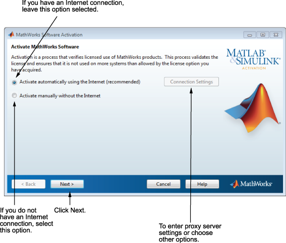

インストールのアクティベーション
"アクティベーション" は、ライセンス許可を受けて MathWorks® 製品を使用することを確認するプロセスです。このプロセスでは、ライセンスを検証して、ライセンス オプションで許可されている数を超えるコンピューターまたはユーザーによってソフトウェアが使用されないようにします。
インストーラーによってアクティベーション アプリケーションを開始し、インストール中に MathWorks アカウントにログインした場合は、アクティベーション プロセスでも同じログイン セッションが続行されます。[次へ] をクリックして、アクティベーションを実行します。

インストール中に MathWorks アカウントにログインしなかった場合や、アクティベーション アプリケーションを単独で起動した場合は、自動アクティベーションか手動アクティベーションを選択しなければなりません。インターネットに接続している場合は、[インターネットを使って自動的にアクティベーションを行う (推奨)] オプションを選択した状態のままにします。インストール直後にアクティベーションを行うと、最も早く MATLAB® の使用を開始できます。
インターネットに接続していない場合は、[インターネットを使わずに手動でアクティベーションを行う] を選択します。このオプションを選択した場合、手動アクティベーションを行うにはライセンス ファイルが必要です。ライセンス ファイルによって、実行できる製品が特定されます。ライセンス ファイルがない場合は、ライセンス管理者に連絡して取得してください。
